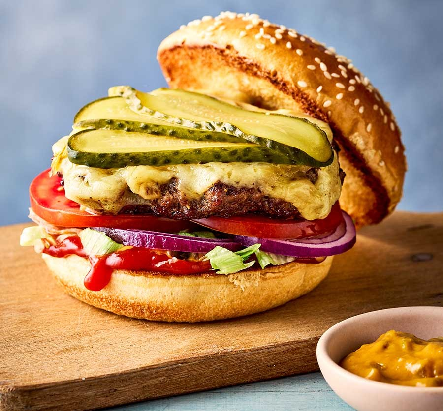

Smash Burgers

Description
The method of ‘smashing’ burgers creates the ultimate meaty crust.
Serve in a burger bun with lettuce, gherkin, tomatoes and your favourite sauces
Ingredients
- 4 burger buns
- 1 tbsp sunflower oil
- 500g steak mince
- 4 slices mild cheddar
- 1 red onion
- handful of iceberg lettuce
- 2 tomatoes
- 1 large gherkin
- mayonnaise
Steps
- Slice the burger buns in half, then toast or grill the cut sides and set aside.
Heat the oven to 100C/80C fan/gas ¼.
- Divide the mince into four loose piles and season generously with salt.
Heat ¼ tbsp oil in a heavy frying pan or skillet over a high heat and put one of the piles in the pan.
Working quickly, cover with a square of baking parchment and use a second smaller pan to press the beef patty down as hard as you can (you may wear oven gloves or use the end of a rolling pin for pressing down,
being careful of the heat and rising steam). Allow to cook for 2 mins.
- Remove the parchment and turn the patty over. Press down with a spatula, cover with a slice of cheese and cook for 1 min.
Transfer to a baking tray and keep warm in the oven while you cook the other burgers in the same way.
- To assemble the burger, scatter a bun base with onion, lettuce and tomato slices, followed by a smashed patty, gherkin slices and the bun top.
Serve with your chosen sauces on the side.
Home